Jak przygotować i prowadzić Studium Strażnicy w wyznaczonym czasie
Wersja 4.0 · listopad 2026
⚠ Dwie ważne uwagi
Zawsze prowadź na podstawie oryginalnej publikacji. Aplikacja pokazuje akapity i pytania tylko po to, żeby obliczyć czas. Prowadzący nigdy nie powinien kierować się treścią wyświetlaną w minutniku: przedstawiając materiał słuchaczom, zawsze korzystaj z aplikacji JW Library albo z drukowanej Strażnicy.
Podczas studium używaj trybu prezentacji. To zalecany sposób korzystania z minutnika w czasie prowadzenia, bo nie rozprasza: pokazuje tylko to, co potrzebne, z kolorami zielonym, żółtym i czerwonym, dzięki którym od razu widzisz, jak wyglądasz z czasem, oraz z dużymi, łatwymi do naciśnięcia przyciskami do przejścia do następnego akapitu i do liczenia komentarzy (rozdział 9).
Minutnik Studium pomaga bratu, który prowadzi Studium Strażnicy, dobrze rozplanować czas i skończyć punktualnie.
Wczytujesz artykuł na dany tydzień w formacie PDF, a aplikacja:
czyta artykuł i znajduje akapity, pytania, wersety do przeczytania, ilustracje, przypisy i pytania do powtórki;
oblicza, ile czasu poświęcić na każdą część: wstęp, każdy akapit, powtórkę i zakończenie;
prowadzi cię przez studium ze stoperem dla każdego akapitu i kolorami, które pokazują, czy mieścisz się w czasie, jesteś w dogrywce czy przekroczyłeś czas;
sama się dostosowuje: jeśli jakiś akapit się przedłuży, rozdziela pozostały czas na kolejne, żebyś skończył punktualnie.
Aplikacja nieoficjalna. To bezpłatny, niezależny projekt. Nie jest oficjalną publikacją i nie ma związku z jw.org ani z organizacją Świadków Jehowy. Artykuł jest analizowany na twoim urządzeniu: nie jest nigdzie wysyłany ani przechowywany na żadnym serwerze.
Ilustracje w tej instrukcji przedstawiają wymyślony artykuł przykładowy, a nie prawdziwy artykuł ze Strażnicy.
2Instalacja aplikacji
Ikona aplikacji to pomarańczowa książka z kolorowym wskaźnikiem (zielonym, żółtym i czerwonym) na czarnym tle.
Jeśli już używasz aplikacji w przeglądarce na urządzeniu z Androidem, na ekranie startowym zobaczysz zieloną kartę „Używasz Androida?” z przyciskiem „Otwórz w Google Play”.
iPhone i iPad
Aplikacji nie ma jeszcze w App Store, ale działa tak samo przez internet:
Naciśnij przycisk Udostępnij (kwadrat ze strzałką w górę).
Wybierz „Do ekranu początkowego” i naciśnij Dodaj. Ikona pojawi się na ekranie.
Komputer
Otwórz temporizador-estudio.vercel.app w Chrome lub Edge. Jeśli chcesz, zainstaluj ją jak program za pomocą ikony instalacji na pasku adresu.
Aktualizacje: gdy pojawi się nowa wersja, zobaczysz komunikat z przyciskiem Aktualizuj. Aplikacja nigdy nie aktualizuje się sama w trakcie studium.
3Ekran startowy
To pierwsze, co widzisz po otwarciu aplikacji. Czerwone numery na obrazku pokazują, gdzie co jest.
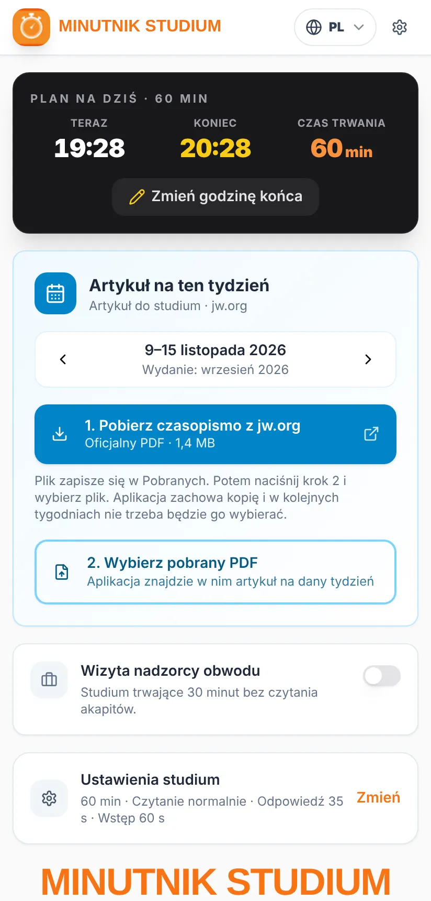
Ekran startowy.
Przycisk z książką: otwiera tę instrukcję w każdej chwili.
„Pierwszy raz w aplikacji?”: otwiera krótki przewodnik albo tę instrukcję. Gdy już znasz aplikację, naciśnij Ukryj.
„Używasz Androida?” (tylko na telefonach z Androidem, w przeglądarce): zainstaluj aplikację z Google Play. Tę kartę też można ukryć.
Niżej znajdziesz:
Plan na dziś: aktualną godzinę, godzinę końca studium i czas trwania.
Artykuł na ten tydzień: pobranie czasopisma i otwarcie go (punkt 4).
Wizyta nadzorcy obwodu: przełącznik dla 30-minutowego studium (punkt 13).
Ustawienia studium: podsumowanie ustawień z linkiem do edycji.
Na samym dole linki do prywatności, instrukcji, Google Play i historii studiów.
Na górze jest też język (PL) i ustawienia⚙.
4Wczytywanie artykułu na ten tydzień
Karta „Artykuł na ten tydzień” pokazuje bieżący tydzień (na przykład 9-15 listopada 2026) i wydanie Strażnicy, w którym się znajduje. Strzałkami ‹› możesz wybrać inny tydzień.
„1. Pobierz czasopismo z jw.org” otwiera oficjalny plik PDF odpowiedniego wydania. Na Androidzie zapisuje się w Pobranych; na iPhonie stuknij Udostępnij → „Zachowaj w Plikach”.
„2. Wybierz pobrany PDF”: wybierz ten plik. Aplikacja wyszuka w czasopiśmie artykuł na wybrany tydzień i go przeanalizuje. Po stuknięciu kroku 1, gdy wrócisz do aplikacji, ten przycisk zrobi się zielony („Pobrane? Stuknij tutaj, żeby otworzyć”): wystarczy jedno stuknięcie.
Strażnica jest pobierana w języku aplikacji. Jeśli aplikacja jest po polsku, pobierane jest wydanie polskie; jeśli po angielsku – angielskie, i tak samo w każdym języku. Żeby pobrać inny język, najpierw zmień język aplikacji (rozdział 14). W języku portugalskim pobierane jest wydanie z Portugalii albo z Brazylii, zależnie od twojego wyboru.
Aplikacja przechowuje kopię czasopisma. Kolejne tygodnie tego samego wydania otwierasz od razu przyciskiem „Otwórz artykuł na ten tydzień”, bez ponownego pobierania. Zapisane czasopisma usuwają się same 3 miesiące po ostatnim tygodniu.
Na komputerze możesz też przeciągnąć plik PDF w dowolne miejsce ekranu startowego (pojawi się komunikat „Upuść tutaj PDF Strażnicy”) albo wybrać folder, w którym trzymasz czasopisma – aplikacja sama je znajdzie.
Komunikat, że czasopismo nie jest jeszcze opublikowane? jw.org publikuje każde wydanie kilka tygodni wcześniej. Jeśli wybierzesz bardzo odległy tydzień, może ono jeszcze nie być dostępne.
5Podsumowanie i plan studium
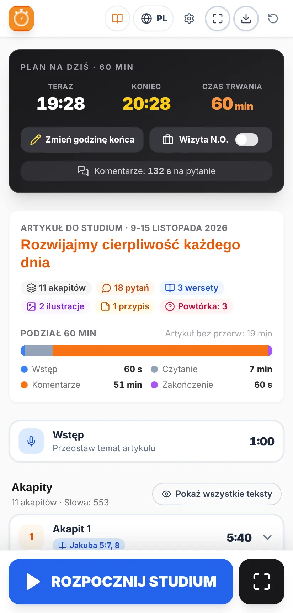
Plan na dziś.
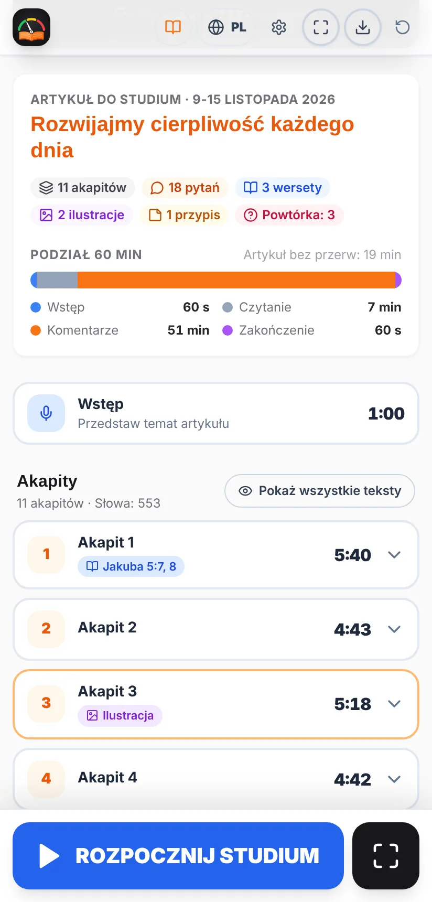
Podsumowanie artykułu.
Godzina końca: o której studium się kończy.
„Zmień godzinę końca”: użyj, gdy wykład publiczny skończy się później (zobacz ramkę poniżej).
Kiedy zmienić godzinę końca? Zebranie trwa 1 godzinę i 45 minut: pieśń i modlitwa (5 min), wykład publiczny (30 min), pieśń (5 min), studium „Strażnicy” (60 min) oraz pieśń i modlitwa na zakończenie (5 min).
Jeśli wykład się przedłuży, te minuty zabiera się studium „Strażnicy”. Przed rozpoczęciem studium naciśnij „Zmień godzinę końca” i wpisz godzinę, o której studium musi się skończyć, żeby zebranie zakończyło się o czasie (5 minut przed końcem, na pieśń i modlitwę). Wszystko zostanie przeliczone, żeby skończyć o tej godzinie.
Jeśli wykład skończy się o czasie lub wcześniej, niczego nie zmieniaj: studium trwa swoje 60 minut, a zebranie może skończyć się trochę wcześniej, ale nigdy później. Dlatego aplikacja nigdy nie wydłuża studium ponad ustawiony czas.
Poniżej podsumowanie artykułu pokazuje:
tytuł i tydzień;
ile ma akapitów, pytań, wersetów, ilustracji i przypisów;
kolorowy pasek z podziałem czasu: WstępCzytanieKomentarzeZakończenie.
Plan pokazuje też „Komentarze: X s na pytanie”, czyli średni czas na odpowiedzi do każdego pytania.
Jeśli artykuł nie mieści się w wybranym czasie, pojawi się ostrzeżenie. Możesz wydłużyć czas albo wybrać szybsze czytanie w Ustawieniach.
6Lista akapitów
Każdy akapit jest w osobnym wierszu z numerem i planowanym czasem. Naciśnij akapit, żeby go otworzyć.
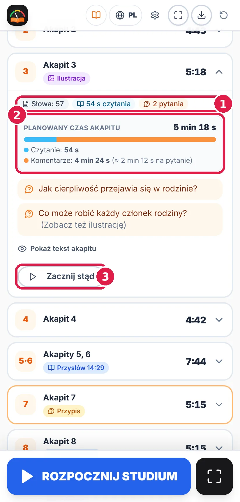
Otwarty akapit.
Dane akapitu, każde w innym kolorze: słowa (szary), czas czytania (niebieski) i pytania (pomarańczowy). W trakcie studium widać też planowane godziny (fioletowy).
Planowany czas akapitu: suma i jej podział. Pasek pokazuje czytanie akapitu (niebieski), komentarze (pomarańczowy), a przy długich akapitach także dodatek na więcej komentarzy (zielony). Jeśli jest werset do przeczytania, ilustracja lub przypis, omawiają go obecni: pojawia się w komentarzach, pod pytaniami (np. „Werset do przeczytania: 35 s”). Części razem dają sumę.
„Zacznij stąd”: jeśli studium już trwa (np. gdy się spóźnisz), przechodzi od razu do tego akapitu.
Kolorowe etykiety podpowiadają, o czym pamiętać:
Etykieta
Znaczenie
Jakuba 5:7, 8
Jest werset do przeczytania.
Ilustracja
Pytanie dotyczy ilustracji w artykule.
Przypis
Jest przypis do omówienia.
★ Ważna myśl
Pytanie wspomina ramkę albo myśl w cudzysłowie.
Przyciskiem „Pokaż tekst akapitu” możesz przeczytać tekst, żeby przygotować czasy. Do prowadzenia zawsze używaj oryginalnej publikacji.
Akapity z jednym wspólnym pytaniem (np. „5, 6”) idą razem, a przycisk Dalej przechodzi przez całą grupę.
7Prowadzenie studium krok po kroku
Zalecane: w czasie studium używaj trybu prezentacji (punkt 9). Tutaj wyjaśniamy, jak to działa; w obu widokach jest tak samo.
Na telefonie główne przyciski są zawsze na dole:
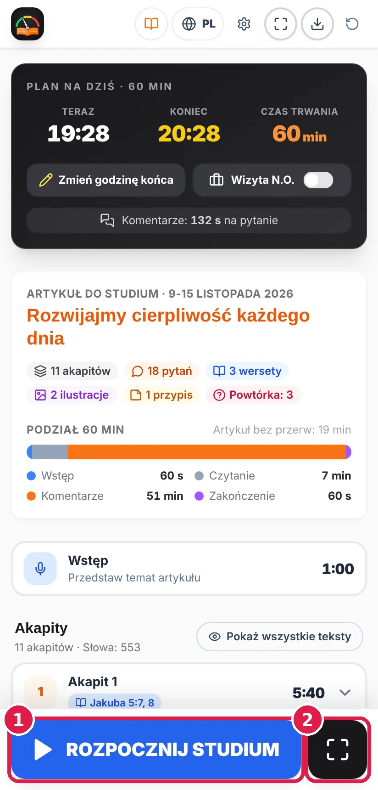
Przed rozpoczęciem.
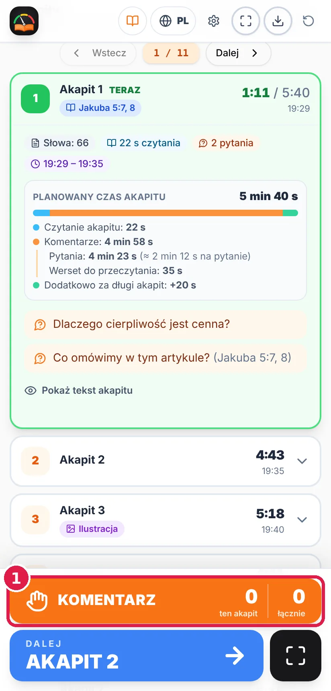
W trakcie akapitu.
Duży niebieski przycisk: mówi, co będzie dalej. Naciskaj go za każdym razem, gdy przechodzisz do kolejnej części: Rozpocznij studium → Akapit 1 → Akapit 2 → … → Powtórka → Zakończenie → Zakończ studium.
Czarny przycisk⛶: otwiera tryb prezentacji.
Podczas akapitów widać też pomarańczowy przycisk ✋ KOMENTARZ: naciśnij go, gdy ktoś komentuje. Na końcu zobaczysz, ile było komentarzy.
Wstęp. Naciśnij „Rozpocznij studium”. Ruszają zegar ogólny i zegar wstępu.
Akapity. Naciskaj Dalej na początku każdego akapitu. Widzisz czas, który minął, i czas planowany (np. 1:11 / 5:43) oraz kolor (punkt 8).
Pytania do powtórki. Po ostatnim akapicie są pytania z ramki na końcu.
Zakończenie. Trwa dokładnie tyle, ile zostało do godziny końca: jeśli zostało więcej czasu, wykorzystuje go całego, nawet jeśli to więcej niż minuta z Ustawień, a jeśli mniej, robi się krótsze. Gdy minie godzina końca, robi się czerwone.
Zakończ studium. Zegar się zatrzymuje i zapisuje się raport ze studium (punkt 15).
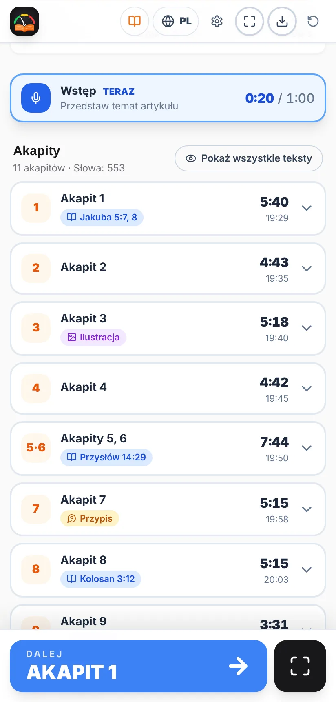
Trwa wstęp.
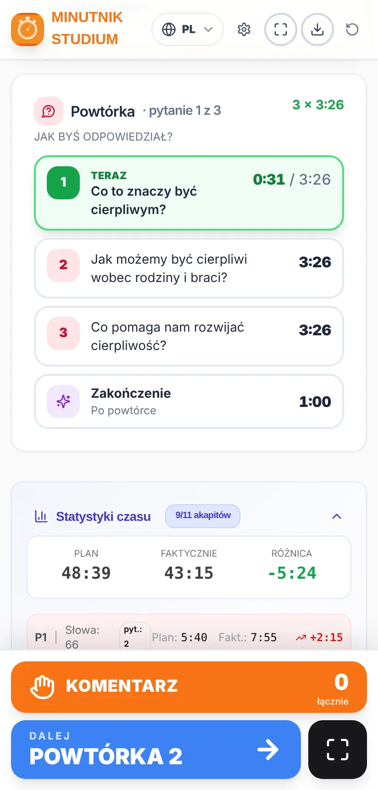
Pytania do powtórki.
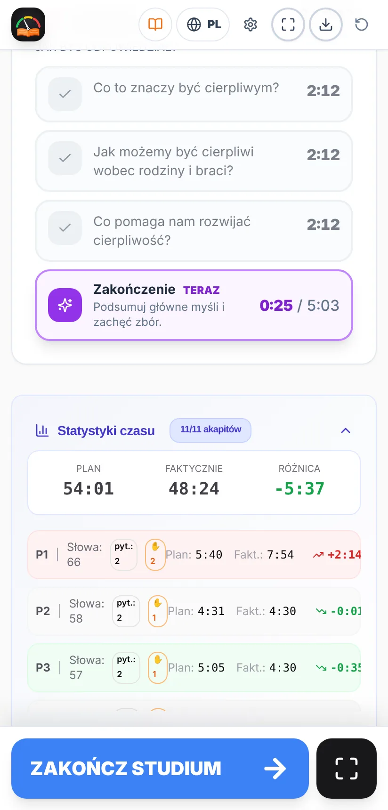
Zakończenie.
Przyciskiem ⏸ w planie możesz wstrzymać zegar, jeśli coś przerwie studium. W czasie pauzy zatrzymuje się zegar bieżącej części, ale godzina końca się nie zmienia: pozostały czas dalej maleje, bo zebranie kończy się o czasie.
8Kolory: zielony, żółty i czerwony
Karta bieżącej części (akapitu, wstępu, pytania do powtórki lub zakończenia) zmienia kolor zależnie od upływu czasu:
Kolor
Kiedy
Co robić
W CZASIE
Do planowanego czasu.
Wszystko dobrze: tak trzymaj.
DOGRYWKA
Czas został przekroczony, ale nie więcej niż o 30%.
Zacznij kończyć komentarze.
PRZEKROCZONO
Ponad 30% więcej niż zaplanowano.
Przejdź do następnego akapitu.
W czasie.
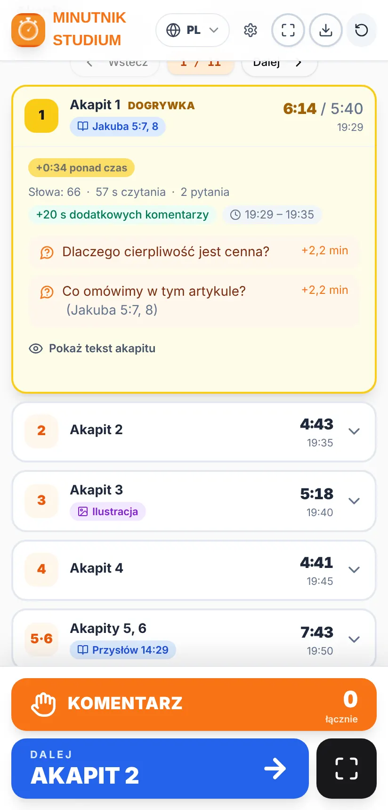
Dogrywka – z czasem przekroczenia.
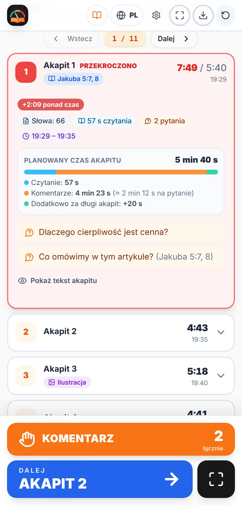
Przekroczono.
W ostatnich 5 minutach studium akapity i pytania do powtórki nie mają dogrywki: zmieniają kolor od razu z zielonego na czerwony, żeby nie zabierać czasu na końcówkę. Zakończenie zawsze zachowuje swoją dogrywkę.
Jeśli jakaś część się przedłuży, nic się nie stanie: po stuknięciu Dalej aplikacja na nowo rozdzieli pozostały czas na to, co zostało, żebyś skończył punktualnie.
Przycisk „Dalej” też ostrzega
Gdy bieżąca część robi się czerwona, zmienia się też duży przycisk do przechodzenia dalej, żebyś od razu to zauważył:
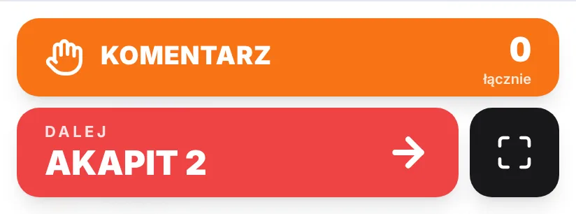
Czerwony: czas da się jeszcze odrobić.
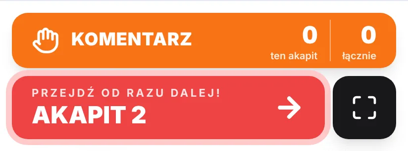
Miga: przejdź od razu dalej.
Czerwony przycisk: część przekroczyła czas, ale da się go jeszcze odrobić w tym, co zostało. Zacznij zamykać komentarze.
Czerwony, migający przycisk z napisem „Przejdź od razu dalej!”: nie ma już skąd odzyskać czasu (zostałoby mniej niż 30 sekund na każde pozostałe pytanie albo trwa ostatnie 5 minut). Przejdź dalej jak najszybciej.
W trybie prezentacji przycisk staje się biały z czerwonymi literami, żeby był dobrze widoczny na każdym kolorze tła.
Jeśli tego nie chcesz, wyłącz to w Ustawienia → Alerty → „Czerwony przycisk ‚Dalej’”.
9Tryb prezentacji
To zalecany sposób prowadzenia studium. Pokazuje tylko to, co najważniejsze, dużymi literami i dużymi przyciskami, a kolor od razu mówi, jak stoisz z czasem.
Otwierasz go przyciskiem ⛶ na dole, a zamykasz ✕ na górze (albo przyciskiem „wstecz” w telefonie, bez wychodzenia z aplikacji).
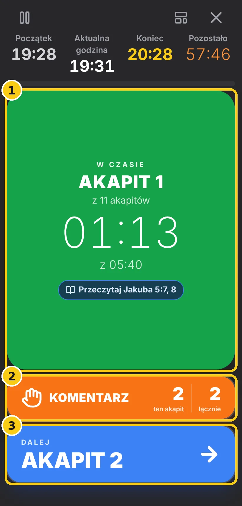
Tryb prezentacji w trakcie akapitu.
Kolorowa ramka: gdzie jesteś (np. Akapit 1), zegar tej części i jej planowany czas. Jest zielona, żółta albo czerwona zależnie od czasu.
Komentarz: naciśnij, gdy ktoś komentuje. Po lewej widać komentarze w tym akapicie (lub tym pytaniu), a po prawej łączną liczbę.
Dalej: przechodzi do następnej części. Przycisk mówi, co będzie dalej.
Na górze widać, o której studium się zaczęło, aktualną godzinę, godzinę końca i ile czasu zostało.
Są trzy układy. Zmieniasz je przyciskiem ▦ na górze albo w Ustawienia → Ekran:
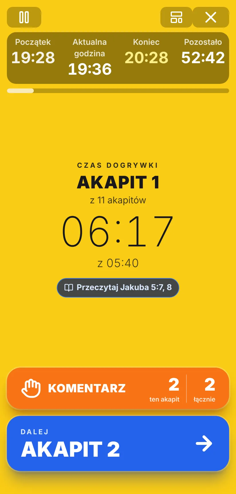
Sygnalizator: cały ekran zmienia kolor.
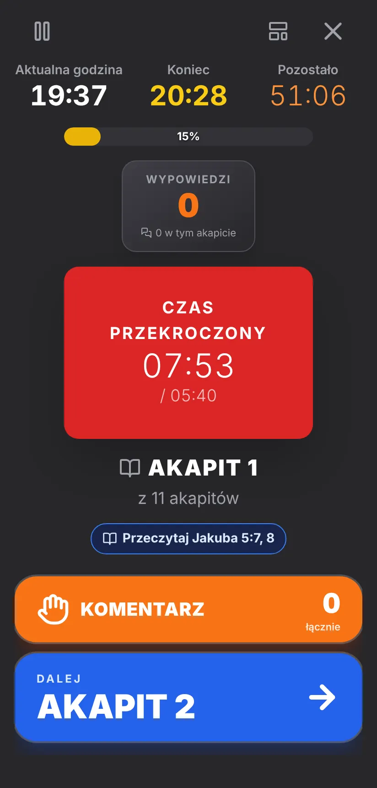
Klasyczny: z licznikiem komentarzy.
Na końcu duży przycisk pokazuje „Zakończ studium”, a potem „Zobacz raport”.
10Jak liczone są czasy
Czytanie każdego akapitu = liczba słów ÷ tempo czytania (150, 180 lub 210 słów na minutę). Każdy werset, ilustracja, przypis lub ważna myśl dodaje jeszcze czas na odpowiedź (co najmniej 30 sekund; domyślnie 35) jako komentarz, bo to obecni go czytają lub omawiają.
Wstęp i zakończenie mają czas z Ustawień (domyślnie po 1 minucie). Zakończenie dopasowuje się do godziny końca: jeśli po powtórce zostanie czas, dostaje go całego; jeśli zostanie mniej, robi się krótsze.
Komentarze: pozostały czas dzieli się na wszystkie pytania. Długie lub zgrupowane akapity dostają trochę więcej (zielony „dodatek” z punktu 6).
W trakcie studium: za każdym naciśnięciem Dalej reszta jest przeliczana, żeby skończyć na czas.
Przykład: w 60-minutowym studium z 11 akapitami i 21 pytaniami około 7 minut to czytanie, 2 minuty to wstęp i zakończenie, a około 51 minut to komentarze, czyli trochę ponad 2 minuty na pytanie.
11Ustawienia
Stuknij ⚙ w prawym górnym rogu. Ustawienia są zapisywane na twoim urządzeniu i podzielone na cztery karty:
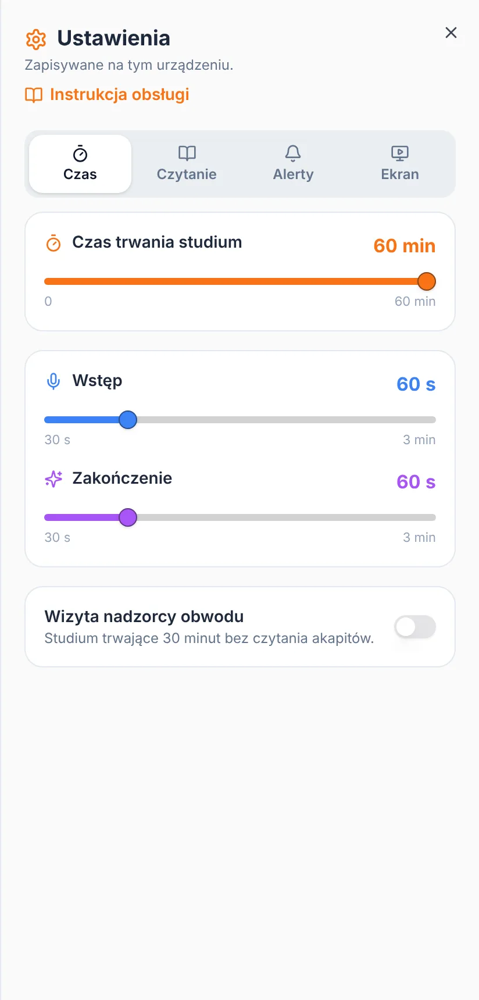
Czas
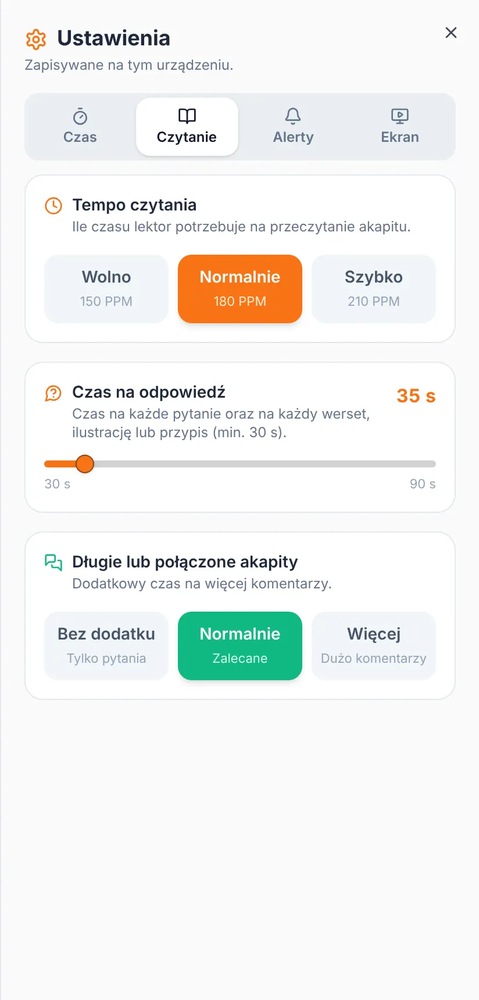
Czytanie
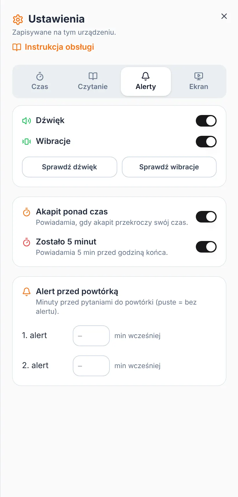
Alerty
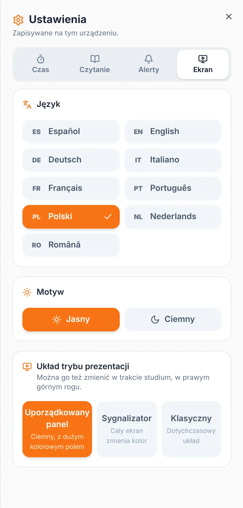
Ekran
Karta
Co możesz zmienić
Czas
Czas trwania studium (do 60 min). Czas wstępu i zakończenia (od 30 s do 3 min). Wizyta nadzorcy obwodu.
Czytanie
Tempo czytania lektora: Wolno (150), Normalnie (180) lub Szybko (210 słów/min). Czas na odpowiedź (od 30 do 90 s; dotyczy też każdego wersetu, ilustracji, przypisu i ważnej myśli). Długie lub połączone akapity: Bez dodatku, Normalnie lub Więcej komentarzy.
Alerty
Dźwięk i wibracje (z przyciskami do sprawdzenia). Alert akapit ponad czas, alert „Zostało 5 minut” i maksymalnie dwa alerty przed powtórką.
Ekran
Język, jasny lub ciemny motyw (z sześcioma ciemnymi wariantami: grafit, czerń AMOLED, granat nocy, ciepły, leśna zieleń i bakłażan) i układ trybu prezentacji.
Jeśli zmienisz tempo czytania albo czas na odpowiedź w trakcie studium, zmiana obejmie następne studium.
12Alerty dźwiękowe i wibracje
Akapit ponad czas: odzywa się, gdy bieżący akapit przekroczy swój czas.
Zostało 5 minut: 5 minut przed godziną końca, z dźwiękiem, wibracją i komunikatem na ekranie.
Przed powtórką: wpisz, ile minut przed pytaniami do powtórki chcesz dostać alert (na przykład 10 i 5). Zostaw puste, jeśli nie chcesz.
Mało czasu na powtórkę: jeśli zostanie mniej niż 20 sekund na pytanie do powtórki, aplikacja cię ostrzeże.
Czerwony przycisk „Dalej”: przycisk do przechodzenia dalej robi się czerwony, gdy część przekroczy czas, i miga, gdy nie ma już skąd odzyskać czasu (punkt 8).
Sprawdź, czy telefon nie jest wyciszony, jeśli chcesz słyszeć alerty. Wibracje działają na Androidzie; na iPhonie zależą od przeglądarki.
13Wizyta nadzorcy obwodu
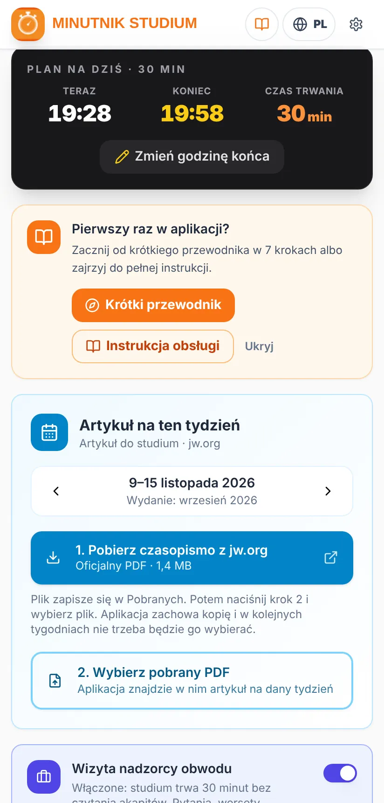
Przełącznik włączony: studium trwa 30 minut.
W tygodniu wizyty włącz przełącznik „Wizyta nadzorcy obwodu” na ekranie startowym (albo w Ustawienia → Czas). Studium trwa wtedy 30 minut i akapity nie są czytane: zostają pytania, wersety, ilustracje i powtórka. Pamiętaj, żeby wyłączyć go po wizycie.
W tym tygodniu akapity nie są czytane. W planowanym czasie każdego akapitu wersety do przeczytania, ilustracje i przypisy są w komentarzach, na przykład „Werset do przeczytania” albo „Ilustracja do omówienia” (w liczbie mnogiej, jeśli jest ich więcej).
14Języki
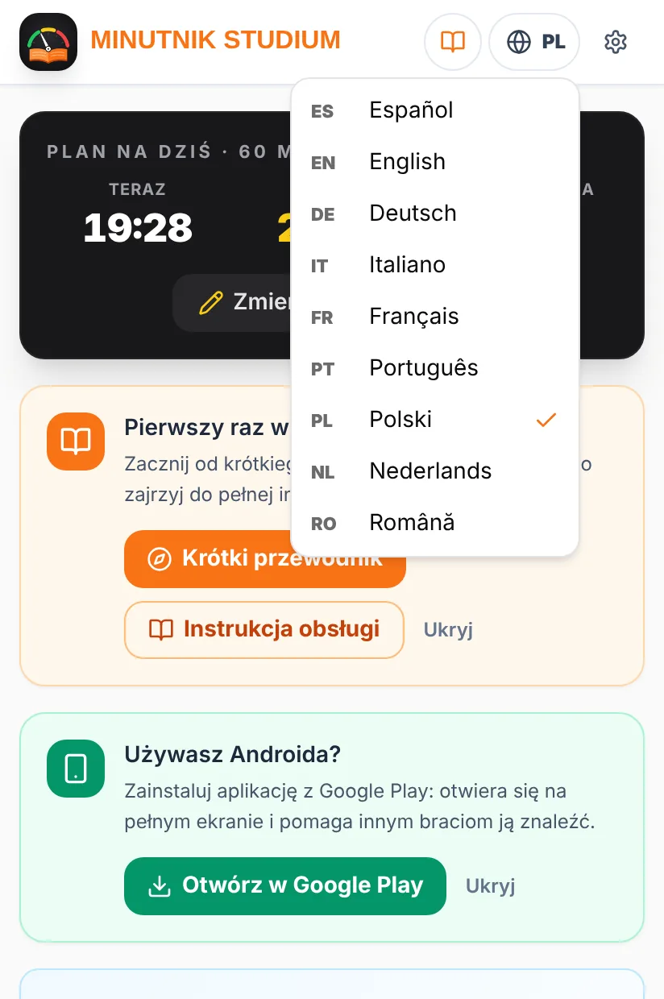
Menu języków.
Aplikacja działa w językach: hiszpańskim, katalońskim, baskijskim, galicyjskim, angielskim, niemieckim, włoskim, francuskim, portugalskim, polskim, niderlandzkim i rumuńskim. Język zmienisz przyciskiem z globusem u góry albo w Ustawienia → Ekran. Po zmianie języka:
cała aplikacja wyświetla się w tym języku, z odpowiednimi datami i godzinami;
przycisk jw.org pobiera Strażnicę w tym samym języku. To język aplikacji decyduje o języku czasopisma;
po portugalsku aplikacja raz zapyta, czy wolisz wydanie z Portugalii czy z Brazylii. Możesz to później zmienić w Ustawienia → Ekran.
Ta instrukcja jest dostępna we wszystkich tych językach: skorzystaj z przycisków języka u góry strony.
15Na koniec: raport i historia
Gdy naciśniesz „Zakończ studium”, aplikacja zapisze raport z czasami każdej części. Pomaga zobaczyć, co trwało za długo, i poprawić się następnym razem.
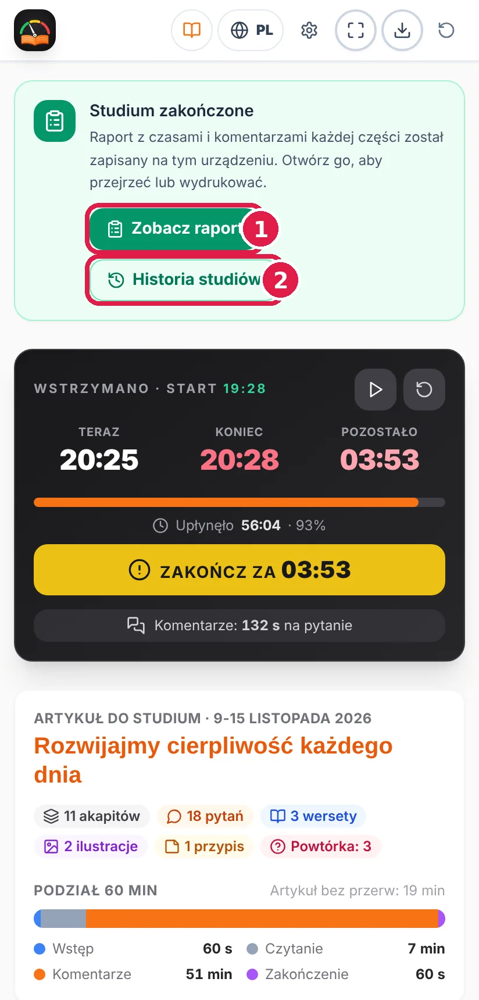
Na górze pojawia się karta „Studium zakończone”.
Zobacz raport: otwiera raport z tego studium w osobnej karcie.
Historia studiów: otwiera listę wszystkich zapisanych studiów.
Raport
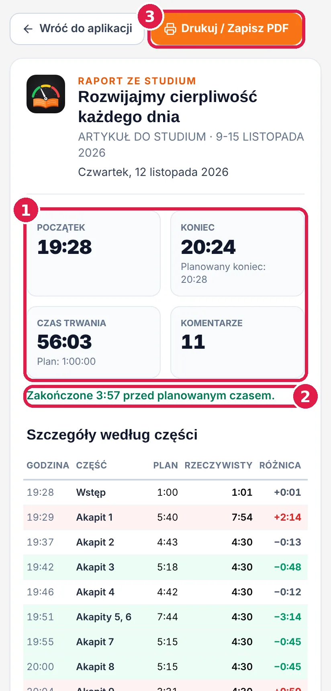
Górna część raportu.
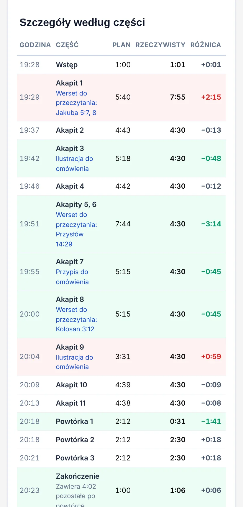
Tabela z każdą częścią.
Początek, koniec i czas trwania studium, z planowaną godziną końca i liczbą komentarzy.
Podsumowanie w jednym zdaniu, np. „Zakończone 3:57 przed czasem” (na zielono) albo „po czasie” (na czerwono).
Drukuj / Zapisz PDF: wydruk na papierze albo zapis jako plik.
Tabela ma wiersz dla każdej części: wstęp, każdy akapit, każde pytanie do powtórki i zakończenie. W każdym wierszu widzisz:
godzinę rozpoczęcia tej części;
Plan i Faktycznie: czas z planu i czas naprawdę wykorzystany;
Różnicę: na zielono, jeśli poszło szybciej, i na czerwono, jeśli trwało dłużej;
✋: zaznaczone komentarze.
Na komputerze i na wydruku widać też słowa i pytania każdego akapitu. Wydrukowany raport mieści się na jednej stronie.
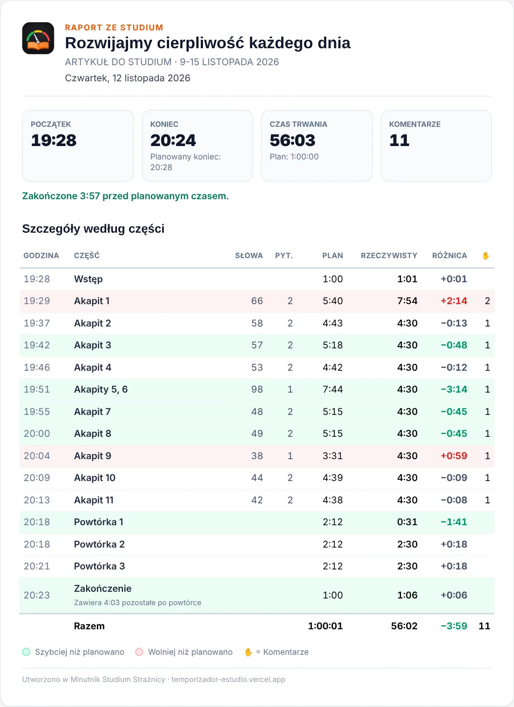
Cały raport, tak jak wygląda na komputerze lub na wydruku.
Historia studiów
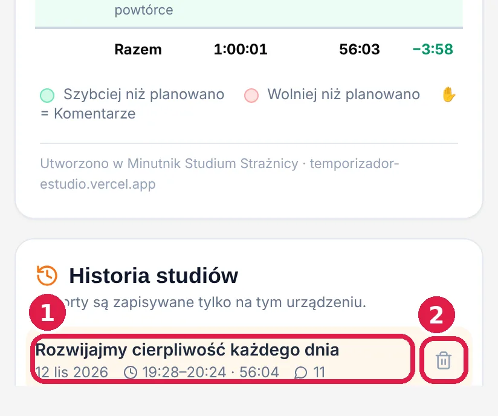
Lista zapisanych studiów, pod raportem.
Naciśnij studium, żeby zobaczyć jego raport. Widać datę, godziny, czas trwania i komentarze.
Kosz: usuwa raport. Naciśnij raz i potwierdź w „Usunąć?”.
Raporty są zapisywane tylko na tym urządzeniu, nigdy w internecie. Przechowywanych jest do 100 studiów. Jeśli usuniesz dane przeglądarki lub aplikacji, historia zniknie.
Historię możesz też otworzyć linkiem „Historia studiów” na dole ekranu startowego.
Inne opcje
Pod planem są też statystyki czasu każdego akapitu.
Przyciskiem eksportuj⬇ na górze zapiszesz plan jako obraz lub PDF.
Żeby przygotować inne studium, naciśnij od nowa↻.
16Najczęstsze pytania
Czy mogę prowadzić, czytając akapity i pytania w aplikacji?
Nie. Aplikacja pokazuje je tylko po to, żeby obliczyć czas. Do prowadzenia zawsze używaj JW Library albo drukowanej Strażnicy.
Dlaczego Strażnica pobrała się w innym języku?
Czasopismo jest pobierane w języku aplikacji. Zmień język przyciskiem z globusem i ponownie stuknij „Pobierz czasopismo z jw.org”.
Aplikacja nie rozpoznaje układu artykułu.
Użyj oficjalnego pliku PDF Strażnicy (wydanie do studium) pobranego z jw.org (przycisk „Pobierz czasopismo z jw.org” zrobi to za ciebie). Zeskanowanych plików PDF ani zrobionych ze zrzutów ekranu nie da się odczytać.
Nie znajduje artykułu na ten tydzień w czasopiśmie.
Sprawdź, czy wybrany tydzień należy do tego wydania czasopisma. Jeśli nie, aplikacja pokaże najbliższy artykuł i pozwoli wybrać inny tydzień.
Czy w czasie studium potrzebuję internetu?
Tylko do pobrania czasopisma. Po wczytaniu artykułu minutnik działa bez połączenia.
Spóźniłem się albo studium zaczęło się później. Co robić?
Otwórz akapit, przy którym jesteście, i stuknij „Zacznij stąd”. Aplikacja rozdzieli pozostały czas.
Wykład publiczny się przedłużył.
Przed rozpoczęciem naciśnij „Zmień godzinę końca” i wpisz godzinę, o której studium musi się skończyć, żeby zebranie zakończyło się o czasie. Aplikacja skróci wszystko, żeby skończyć o tej godzinie. Ta opcja tylko skraca studium: nigdy go nie wydłuża.
Alerty się nie odzywają.
Sprawdź w Ustawienia → Alerty, czy są włączone, stuknij „Sprawdź dźwięk” i upewnij się, że telefon nie jest wyciszony.
Jakie dane przechowuje aplikacja?
Tylko twoje ustawienia i czasopisma, które zdecydujesz się zachować – i zawsze na twoim urządzeniu. Nie ma kont i żadne dane nie są wysyłane na serwer. Więcej informacji w polityce prywatności.
Gdzie zobaczę studia z innych tygodni?
W historii studiów: naciśnij „Historia studiów” po zakończeniu studium albo użyj linku na dole ekranu startowego.
Czy mogę usunąć raport?
Tak. W historii naciśnij kosz obok studium i potwierdź w „Usunąć?”.
Dlaczego zakończenie trwało dłużej niż w planie?
Jeśli po powtórce zostaje czas, zakończenie go wykorzystuje, żeby skończyć o czasie. Raport pokazuje to pod „Zakończenie”.